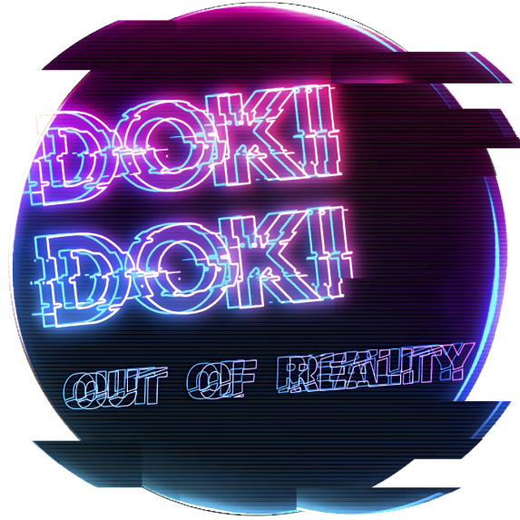
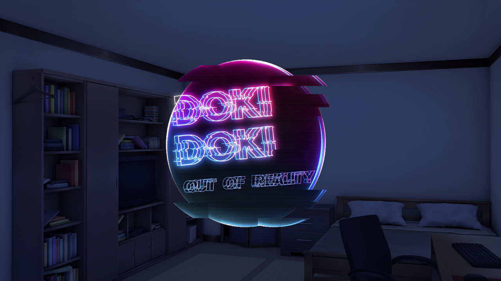

Doki Doki Out Of Reality

Mod creado por: Helder Rocket
Duración: Muy Corto
Generos: Suspenso
Descripción:
El jugador al saber que ninguna de las chicas puede entrar a esta realidad, el hará lo posible para ir a la suya
Zona de descargas
Más sobre el mod:
